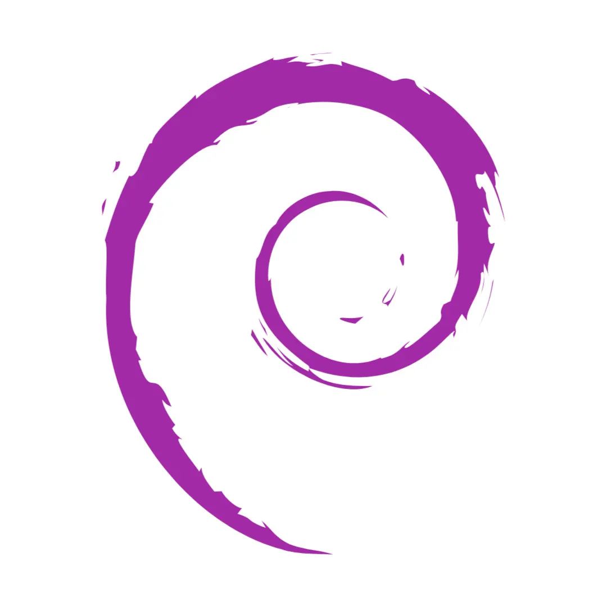

a passionate Computer Engineering student studying at McMaster University. If I'm not learning something new, I'm engaging in opportunities within the broader STEAM community. Currently I'm pursuing a career in embedded systems engineering with the goal of working in the space industry üöÄ.
I enjoy cooking üçΩÔ∏è, gardening üå±, hanging with friends ü§ô, and music üéπ!
My initial focus centred on developing a prototype power management board, a critical component tasked with toggling between battery charging and discharging modes for a 2S LiPo battery. This was designed in KiCad and then manufactured by JLCPCB. I then flashed the STM32 with custom firmware written in rust to validate that the board functioned as intended.
The schematic of the power-management prototype board
A rendered model of the prototype power board
We had a cap blow because my schematic specified it to be placed in the wrong polarity! Whoops... It's a good thing we had two boards made :)
The blown tantalum cap (bottom)
It worked after I resoldered a new cap!
This project is still ongoing, and we aim to use it for our new Luminis rocket during Launch Canada and Spaceport America Cup! I'm currently working on the final version which includes LoRA, GPS, and Bluetooth functionality!
So far, I've worked on software development, CAD design, and electronics integration. The selection of the STM32 microcontroller, the integration of LoRa communication and Bluetooth connectivity, and the incorporation of safety features such as remote rocket ignition and fail-safe mechanisms were all driven by a safety-first approach.
Ground Control Station
STM32 / ESP32 rocket controller with LoRa, GPS, and Bluetooth
Our team designed a user-friendly device for a client with multiple sclerosis, enabling independent road-crossing. Overcoming challenges, I contributed to software development, CAD design, and electronics integration. We aimed for adjustability without external aid, user serviceability, and a total cost not exceeding $100.
To optimize the design, we implemented various strategies. By reducing overhangs and simplifying geometry, we achieved faster 3D print times and a cleaner design without the need for support structures. Biomimetic design principles allowed for a lightweight yet strong arm capable of supporting up to 20 pounds. Simulation software was employed to analyze stress points and ensure the arm's capacity.
First time we assembled the whole design!
The biomimetic arm based on bird bones; lightweight yet strong. Also inspired by bone marrow for the wire routing.
The project provided valuable insights and experiences. Clear communication, regular check-ins, and project management tools facilitated efficient teamwork. Embracing a growth mindset allowed us to overcome obstacles and find creative solutions. Reflecting and debriefing after each milestone enhanced our approach and deepened our understanding. Overall, the project not only achieved its objectives but also fostered continuous learning, improvement, and the potential for future growth.
Initially, this was just an experiment to see if I could split a 3D model into a "positive" and "negative" part, then print each in a different colour to get a cool two-tone look by manually swapping colours on the first layer. The results were very promising and once the idea of business cards popped into my head, this quickly turned into a whole new project!
I decided to make my own business cards because I wanted to have a more convenient and creative way to share my contact information and portfolio with potential employers, clients, or collaborators. Instead of handing out paper cards that can get lost or thrown away, I can simply tap my NFC card to the recipient's phone, and instantly open the link to this very website!
To make my NFC business cards, I used the following materials and tools:
- NFC cards: I bought a pack of 10 NFC cards from Amazon for about $10. They're thin, flexible and have the same dimensions as a standard credit card. I used an app called NFC Tools to load a link to my online portfolio onto the cards. - 3d printer and filament: I have a Bambu Labs P1S and used PLA filament to print the sheathes as it was what I had on hand and prefer to use as I know the material well. - 3d modelling software: I used Fusion 360 to design the sheathes for my NFC business cards. I wanted to make the sheathes not only protective, but also stylish and functional. I added a QR code on one side, with a topographic inlay on one side, and my contact information on the other side
Overall, I'm very happy with how my business cards turned out. I think it's a really unique way to showcase my skills and creativity to potential employers during networking events, and even just as a showpiece for friends. Despite only making these recently, I've received countless compliments and positive feedback from my friends and recruiters who I've shown these cards to.
Both black/white and white/black versions! Gotta keep it fresh :)
The sheathes slide on then clip to the other side!
How the clip mechanism works. Designed for 0 supports!
A render done in fusion360 to show what it was designed to look like.
NFC Business Cards
Using the power of 3D printing!
Experience
Experience
Ciena Corp.
Hardware Design Engineer | Co-Op
May. 2023 - Aug. 2023
Summary
During my internship as a Hardware Design Engineer Intern, focusing on Interconnect/Signal Integrity at Ciena, I had the privilege of gaining hands-on experience in a vibrant and inclusive environment. Working on real projects in world-class labs, I had the opportunity to define interconnect solutions, conduct verification testing, collaborate with suppliers, and develop my technical skills. The mentorship and networking opportunities provided at Ciena were invaluable, and the company's commitment to work-life integration made the experience fulfilling. I am grateful for the growth and passion for innovation that this internship instilled in me.
Ciena
Hardware Design Engineer | Co-Op
Projects

Projects
Violet Debian
My custom Debian installation
Oct. 2023 - Present
Summary
Violet Debian is a work-in-progress minimal Debian install that uses the dwm window manager. It aims to provide a streamlined Debian environment tailored to my specific preferences and requirements.
- Installs essential packages, including dwm, dmenu, and various utilities like firefox and flameshot, to create a lightweight yet functional Debian environment.
- Establishes configurations for terminal emulators (Kitty), file manager (Ranger), Vim text editor, and fonts (mononoki), ensuring a consistent and personalized user experience.
This project was an excuse for me to learn bash scripting while also learning how Linux (and by extension other operating systems) can be built on top of just a barebones terminal. I also learned how to use virtual machines for rapid-testing of features, and the importance of iterative design.
In the future I hope to add user interaction by asking for custom-directories for configs to be placed in, and other cool features.
In grade 12, my teacher gave me the opportunity to pursue a passion project for four months. After debating for days, I settled on making a DIY laser CNC. Prior to this I only had rudimentary knowledge of both Arduino and 3D printing, but learned an enormous deal about both in the process.
I started off by creating a budget and making a rough timeline (both of which I definitely stuck to and didn't go overbudget and lag behind schedule ü§™ü§´) and began laying out the groundwork of the project. I learned how to 3D model using fusion360 and optimize said designs for 3D printing by reducing overhangs and learning how to correctly print screw holes.
First time I got the laser PWM control working!
A cool duck I lasered overnight on scrap wood.
I built the CNC out of extruded aluminum rails and rollers, some of which used 3D printed wheels for budget reasons. It was all controlled using LaserGRBL, a free and open source Arduino firmware that was made for exactly my use case. My CNC can operate both on raster and vector images, the former of which operates with only one active axis of motion at a time where it lasers one line (x axis) and then moves up one pixel (y-axis) and draws the next line. Vectors are much cooler however, as both axis motors can operate at once, allowing it to "draw" much like a person could, which allows for much cleaner end results.
Note: this is still in progress! Some sections like the video/pictures are not ready yet!
Summary
There's no better way to introduce this project than to call it a labour of love. I've loved music all my life and the equipment I use plays a big role in my enjoyment. I already have a nice pair of Sennheiser HD600's and a Schiit Asgard 3 amp, but I wanted an analog way to control the tone of my music. Enter this project: with no good desktop solution on the market for a reasonable price, I decided to design my own.
I painstakingly planned every aspect of this project from component selection to fabrication as after all, I'd literally be facing the music if I got it wrong. I used Altium Designer and Fusion 360 acting as an both an electrical and mechanical designer to co-create the PCB and enclosure simultaneously. Below are pictures of both the routed board in Altium and the rendered enclosure made with Fusion.
The circuit board I designed in Altium
A 3D render of the finished project (parts are still shipping from china!!!)
I included a true bypass circuit powered by two relays, an AtTiny IC, and an optocoupler, allowing for it to be completely toggled off when hooked midway through other audio equipment and the source media device. This means that I can set it and forget it, with a switch on the front panel free to flick whenever I'm feeling like having some fun. I also included balanced stereo inputs and outputs, so that each channel gets exactly the same amount of tone control with no guesswork required.
All in all I worked on this project for months on end, chipping away whenever I had some free time on weekends or the like. It was a long time in the making but in the end I'm damn sure it was worth it if for nothing else but the satisfaction of knowing that I made that whenever I see it on my desk.
References and Links
Below are some videos, blogs, and documents that made this project possible, being my first time delving into analog audio circuitry.
For my final project in 2SH4 (principles of programming), I created a terminal-based snake game using C++ and object oriented design principles with another partner using Agile methodologies.
- I employed object-oriented principles such as encapsulation and inheritance to create a modular and extensible codebase. - Organized into well-defined classes like Snake, Food, and GameMechs (game mechanics), promoting code reusability and maintainability. - Used a simple array list implementation for the snake body, optimised for system resource usage.
I learned about Agile methodologies, emphasizing iterative development, regular team collaboration, and adaptability to changing requirements. This Snake game project not only demonstrates my proficiency in C++ and object-oriented design but also showcases my ability to create a fun and interactive application in a console environment.